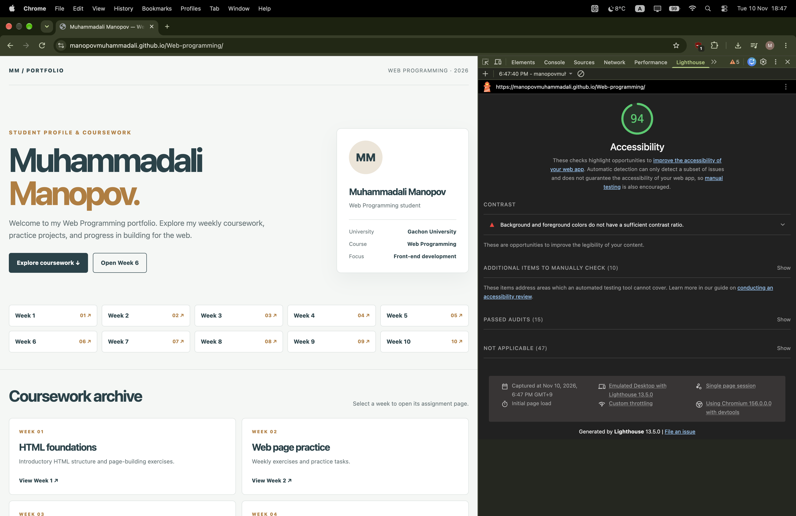
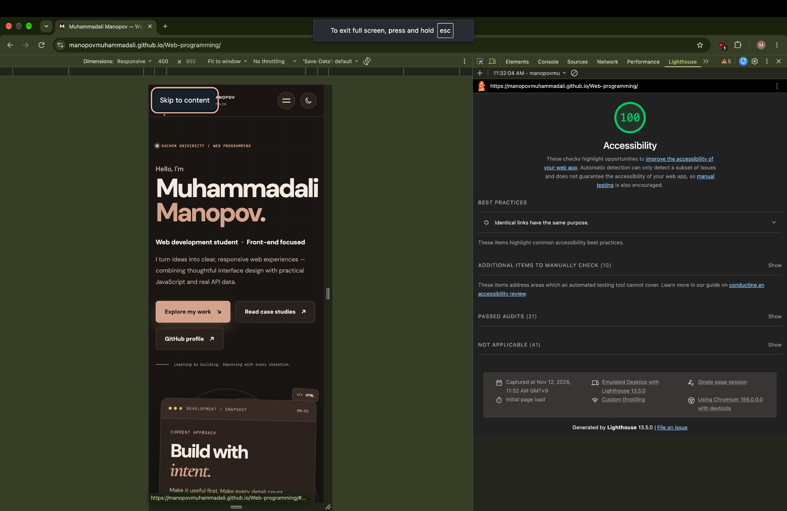

WEEK 09 / WEB ACCESSIBILITY
Accessible web design
Practice semantic HTML, keyboard navigation, alt text and accessibility testing.
01 — Lighthouse Accessibility Audit
Open Chrome DevTools, choose Lighthouse, select Accessibility, and run an audit on the published portfolio.
- Open the published website in Chrome.
- Open DevTools.
- Select Lighthouse.
- Select Accessibility and run the report.
- Record the actual score and fix reported issues.
Initial Lighthouse Accessibility Audit
Test date: November 10, 2026
Page tested: Portfolio homepage
Accessibility score: 94/100
The initial audit identified insufficient foreground and background color contrast.

Follow-up Lighthouse Accessibility Audit
Test date: November 12, 2026
Page tested: Published portfolio homepage
Accessibility score: 100/100
Audit tool: Lighthouse 13.5.0
Audit configuration: Emulated Desktop
The follow-up Lighthouse audit recorded an accessibility score of 100/100. This is an improvement over the initial recorded result of 94/100.
The report shows 21 passed audits and 10 items that still require manual checking. A perfect automated score does not replace keyboard, screen-reader and other manual accessibility testing.

02 — Skip Link
Press Tab after reloading this page. The skip link appears and allows keyboard users to jump to the main content.
Skip to main content03 — Replace a Div-Button With a Real Button
A clickable div is not automatically keyboard accessible.
Use a native button instead:
04 — Add Proper Alt Text
Decorative images should use an empty alt attribute:
alt="".
05 — Run Lighthouse and Fix Issues
Run an accessibility audit, identify problems, fix them and test the website again.
- Open the published portfolio in Chrome.
- Open Developer Tools.
- Select Lighthouse.
- Select Accessibility.
- Run the audit.
- Record your actual score.
- Fix the accessibility problems.
- Run the audit again and compare results.
Keyboard testing
Use Tab and Shift+Tab to navigate through the page. Press Enter or Space to activate controls. Check that every interactive element has visible focus.
Record your actual Lighthouse results after testing. Do not enter an estimated score.
Accessibility checklist
- Use semantic headings and landmarks.
- Give meaningful images useful alt text.
- Use real buttons for actions.
- Associate every form field with a label.
- Keep visible keyboard focus.
- Check color contrast.
- Run Lighthouse and fix actual findings.